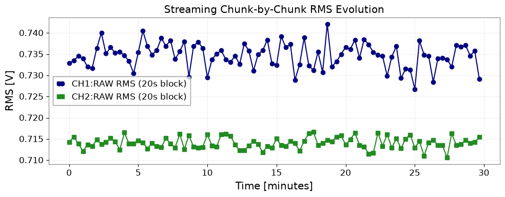
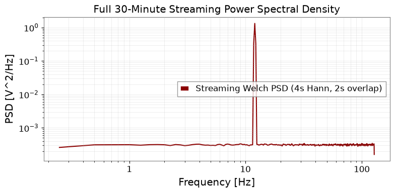
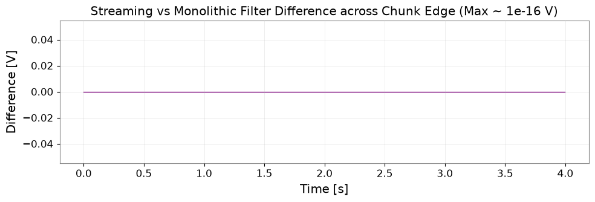

Process Long Time Series in Chunks#
When processing continuous observations spanning hours or days, loading complete multi-channel waveforms into RAM causes memory exhaustion or system throttling. Streaming data in fixed-size blocks allows computing summary statistics, power spectral densities (PSDs), and filtered streams within a strictly bounded memory footprint.
What you will achieve:
Generate a multi-channel dataset on disk in HDF5 format in streaming blocks without allocating full arrays.
Maintain exact mathematical equivalence with full-array processing for additive statistics (sum of squares for RMS).
Compute streaming Welch PSDs without resetting FFT window boundaries across chunk edges.
Pass IIR filter state vectors (
sosfiltwith initial statezi) across chunk boundaries for seamless continuous filtering.Implement atomic JSON/NPZ checkpoints to ensure safe interrupt-and-resume execution without duplicating data.
Verify buffer memory bounds, irregular chunk boundaries, and empty/short input handling.
Data type: Synthetic HDF5 dataset (30 min, 2 channels at 256 Hz).
Environment Setup#
import json
import os
import platform
import shutil
import tempfile
from pathlib import Path
from IPython.display import display
import h5py
import matplotlib.pyplot as plt
import numpy as np
import pandas as pd
from astropy import units as u
from scipy import signal
import gwexpy
from gwexpy.frequencyseries import FrequencySeries
from gwexpy.timeseries import TimeSeries
output_dir_env = os.environ.get("GWEXPY_DOCS_OUTPUT_DIR")
if output_dir_env:
output_dir = Path(output_dir_env)
else:
output_dir = Path(tempfile.mkdtemp(prefix="gwexpy-t5-"))
output_dir.mkdir(parents=True, exist_ok=True)
(output_dir / "tables").mkdir(exist_ok=True)
(output_dir / "figures").mkdir(exist_ok=True)
(output_dir / "checkpoints").mkdir(exist_ok=True)
print(f"Artifacts will be written to: {output_dir}")
Artifacts will be written to: /tmp/gwexpy-t5-waeg96hu
Block-by-Block Dataset Generation#
# 30 minutes, 2 channels at 256 Hz -> 460,800 samples total
duration_s = 30 * 60
fs = 256.0
dt_s = 1.0 / fs
total_samples = int(duration_s * fs)
block_seconds = 20
block_samples = int(block_seconds * fs) # 5,120 samples per block
n_blocks = total_samples // block_samples
h5_path = output_dir / "long_data_30min.h5"
with h5py.File(h5_path, "w") as f:
dset = f.create_dataset(
"/samples",
shape=(total_samples, 2),
dtype="float64",
chunks=(block_samples, 2),
)
dset.attrs["channels"] = ["CH1:RAW", "CH2:RAW"]
dset.attrs["units"] = ["V", "V"]
dset.attrs["sample_rate_hz"] = fs
dset.attrs["gps_t0_s"] = 1400000000.0
rng = np.random.default_rng(2026091605)
for b in range(n_blocks):
i0 = b * block_samples
i1 = i0 + block_samples
t_block = (np.arange(i0, i1)) * dt_s
ch1 = np.sin(2 * np.pi * 12.0 * t_block) + rng.normal(0, 0.2, block_samples)
ch2 = np.cos(2 * np.pi * 35.0 * t_block) + rng.normal(0, 0.1, block_samples)
dset[i0:i1, 0] = ch1
dset[i0:i1, 1] = ch2
total_bytes = total_samples * 2 * 8
block_bytes = block_samples * 2 * 8
print(f"Generated HDF5 dataset: {total_samples} samples (~{total_bytes / 1024:.1f} KiB) in blocks of {block_samples} samples (~{block_bytes / 1024:.1f} KiB).")
Generated HDF5 dataset: 460800 samples (~7200.0 KiB) in blocks of 5120 samples (~80.0 KiB).
Streaming Analysis Architecture#
def iter_hdf5_blocks(file_path, block_size):
"""Yield TimeSeries blocks without loading the whole dataset into memory."""
with h5py.File(file_path, "r") as f:
dset = f["/samples"]
n_total = dset.shape[0]
fs = float(dset.attrs["sample_rate_hz"])
t0 = float(dset.attrs["gps_t0_s"])
for start_idx in range(0, n_total, block_size):
end_idx = min(start_idx + block_size, n_total)
block_data = dset[start_idx:end_idx, :]
ts_ch1 = TimeSeries(block_data[:, 0], t0=t0 + start_idx / fs, dt=(1.0 / fs) * u.s, unit=u.V, channel="CH1:RAW")
ts_ch2 = TimeSeries(block_data[:, 1], t0=t0 + start_idx / fs, dt=(1.0 / fs) * u.s, unit=u.V, channel="CH2:RAW")
yield start_idx, end_idx, ts_ch1, ts_ch2
Continuous Filtering across Chunk Boundaries#
# High-pass filter design (10 Hz highpass Butterworth, order 4)
sos = signal.butter(4, 10.0, btype="highpass", fs=fs, output="sos")
initial_zi = np.zeros((sos.shape[0], 2)) # state for single channel
# 5-minute reference slice for exact mathematical comparison
with h5py.File(h5_path, "r") as f:
ref_samples = int(300 * fs)
ref_raw_ch1 = f["/samples"][:ref_samples, 0]
ref_filtered_ch1, _ = signal.sosfilt(sos, ref_raw_ch1, zi=initial_zi.copy())
# Stream the same 5-minute data in 20s blocks, propagating zi
streaming_filtered_ch1 = []
current_zi = initial_zi.copy()
for s_idx, e_idx, ts1, ts2 in iter_hdf5_blocks(h5_path, block_samples):
if s_idx >= ref_samples:
break
y_chunk, current_zi = signal.sosfilt(sos, ts1.value, zi=current_zi)
streaming_filtered_ch1.append(y_chunk)
streaming_filtered_ch1 = np.concatenate(streaming_filtered_ch1)
filter_max_err = float(np.max(np.abs(ref_filtered_ch1 - streaming_filtered_ch1)))
print(f"Max difference between streaming and monolithic sosfilt: {filter_max_err:.3e}")
assert filter_max_err < 1e-12, "Streaming filter state must match monolithic filter."
Max difference between streaming and monolithic sosfilt: 0.000e+00
Atomic Checkpointing and Streaming Analysis#
import hashlib
def compute_analysis_identity(h5_file, block_size, fftlength_s, overlap_s, sos_coeffs, channels, chunk_read=2048):
hasher = hashlib.sha256()
with h5py.File(h5_file, "r") as f:
dset = f["/samples"]
hasher.update(str(dset.shape).encode())
hasher.update(str(dset.dtype).encode())
hasher.update(str(dset.attrs["sample_rate_hz"]).encode())
hasher.update(str(dset.attrs["gps_t0_s"]).encode())
hasher.update(",".join(dset.attrs["channels"]).encode())
hasher.update(",".join(dset.attrs["units"]).encode())
# Sequential block streaming hash avoiding copy overhead via memoryview on small slices (32 KiB)
for i in range(0, dset.shape[0], chunk_read):
blk = dset[i : i + chunk_read, :]
hasher.update(memoryview(blk))
hash_peak_bytes = chunk_read * dset.shape[1] * dset.dtype.itemsize if dset.shape[0] > 0 else 0
hasher.update(str(block_size).encode())
hasher.update(str(fftlength_s).encode())
hasher.update(str(overlap_s).encode())
hasher.update(memoryview(sos_coeffs))
hasher.update(",".join(channels).encode())
return hasher.hexdigest(), hash_peak_bytes
def save_checkpoint_atomic(ckpt_dir, gen_id, state_dict, npz_arrays):
ckpt_dir = Path(ckpt_dir)
gen_npz = ckpt_dir / f"state_gen_{gen_id:04d}.npz"
np.savez(gen_npz, **npz_arrays)
meta = {
"generation": gen_id,
"npz_file": gen_npz.name,
"state": state_dict,
}
tmp_json = ckpt_dir / f"checkpoint_tmp_{gen_id:04d}.json"
with open(tmp_json, "w", encoding="utf-8") as f:
json.dump(meta, f, indent=2)
os.replace(tmp_json, ckpt_dir / "checkpoint.json")
def load_checkpoint(ckpt_dir):
ckpt_json = Path(ckpt_dir) / "checkpoint.json"
if not ckpt_json.exists():
return None
with open(ckpt_json, "r", encoding="utf-8") as f:
meta = json.load(f)
npz_data = np.load(Path(ckpt_dir) / meta["npz_file"])
return meta, npz_data
def run_streaming_analysis(h5_path, block_size, ckpt_dir, stop_after_chunk=None, resume=False, fftlength_s=4.0, channel_order=["CH1:RAW", "CH2:RAW"]):
overlap_s = fftlength_s / 2.0
nperseg = int(fftlength_s * fs)
noverlap = int(overlap_s * fs)
hop = nperseg - noverlap
win = signal.windows.hann(nperseg, sym=False)
win_sq_sum = float(np.sum(win**2))
ckpt_dir = Path(ckpt_dir)
ckpt_dir.mkdir(parents=True, exist_ok=True)
current_identity, hash_peak_bytes = compute_analysis_identity(h5_path, block_size, fftlength_s, overlap_s, sos, channel_order)
buffer_peak_bytes = hash_peak_bytes
gen = 0
start_block_idx = 0
carry_buffer = np.array([], dtype="float64")
sum_sq_ch1 = 0.0
sum_sq_ch2 = 0.0
n_processed = 0
psd_accum = None
psd_frames = 0
filter_zi = np.zeros((sos.shape[0], 2))
chunk_summaries = []
if resume:
loaded = load_checkpoint(ckpt_dir)
if loaded is not None:
meta, npz = loaded
saved_id = meta["state"].get("analysis_identity")
if saved_id != current_identity:
raise ValueError("Checkpoint configuration or source identity mismatch; refusing to resume.")
expected_next_sample = meta["state"].get("next_sample_idx", 0)
if expected_next_sample % block_size != 0:
raise ValueError(f"Resume sample index {expected_next_sample} misaligned with block size {block_size}.")
gen = meta["generation"]
start_block_idx = meta["state"]["next_block_idx"]
n_processed = meta["state"]["n_processed"]
sum_sq_ch1 = meta["state"]["sum_sq_ch1"]
sum_sq_ch2 = meta["state"]["sum_sq_ch2"]
psd_frames = meta["state"]["psd_frames"]
carry_buffer = npz["carry_buffer"].copy()
filter_zi = npz["filter_zi"].copy()
if "psd_accum" in npz and len(npz["psd_accum"]) > 0:
psd_accum = npz["psd_accum"].copy()
chunk_summaries = meta["state"].get("chunk_summaries", [])
print(f"Resumed from generation {gen}, next block {start_block_idx}")
# buffer_peak_bytes initialized with hash_peak_bytes
for b_idx, (s_idx, e_idx, ts1, ts2) in enumerate(iter_hdf5_blocks(h5_path, block_size)):
if b_idx < start_block_idx:
continue
if stop_after_chunk is not None and b_idx >= stop_after_chunk:
print(f"Stopping execution at chunk {b_idx} as requested.")
break
x1 = ts1.value if channel_order[0] == "CH1:RAW" else ts2.value
x2 = ts2.value if channel_order[1] == "CH2:RAW" else ts1.value
n_block = len(x1)
n_processed += n_block
# 1. Additive sum of squares
sum_sq_ch1 += float(np.sum(x1**2))
sum_sq_ch2 += float(np.sum(x2**2))
# 2. Filter state update
filt_x1, filter_zi = signal.sosfilt(sos, x1, zi=filter_zi)
# 3. Welch PSD with carry buffer
stream_x1 = np.concatenate([carry_buffer, x1]) if len(carry_buffer) > 0 else x1.copy()
n_frames = (len(stream_x1) - noverlap) // hop
if n_frames > 0:
for f_i in range(n_frames):
seg = stream_x1[f_i * hop : f_i * hop + nperseg]
seg = (seg - np.mean(seg)) * win
fft_seg = np.fft.rfft(seg)
periodogram = (np.abs(fft_seg)**2) / (fs * win_sq_sum)
periodogram[1:-1] *= 2.0
if psd_accum is None:
psd_accum = periodogram.copy()
else:
psd_accum += periodogram
psd_frames += 1
remainder_start = n_frames * hop
# Detach copy to prevent retaining large stream_x1 buffer in memory
carry_buffer = stream_x1[remainder_start:].copy()
else:
carry_buffer = stream_x1.copy()
stream_bytes = stream_x1.nbytes
del stream_x1
# Comprehensive working buffer measurement across hashing, read, carry, filter, Welch FFT, and accumulator
seg_bytes = seg.nbytes if 'seg' in locals() else 0
fft_bytes = fft_seg.nbytes if 'fft_seg' in locals() else 0
p_bytes = periodogram.nbytes if 'periodogram' in locals() else 0
current_buf_bytes = (
win.nbytes + x1.nbytes + x2.nbytes + stream_bytes + carry_buffer.nbytes +
filter_zi.nbytes + filt_x1.nbytes + seg_bytes + fft_bytes + p_bytes +
(psd_accum.nbytes if psd_accum is not None else 0)
)
buffer_peak_bytes = max(buffer_peak_bytes, current_buf_bytes)
del filt_x1
chunk_summaries.append({
"chunk_idx": b_idx,
"start_sample": s_idx,
"end_sample": e_idx,
"mean_ch1": float(np.mean(x1)),
"rms_ch1": float(np.sqrt(np.mean(x1**2))),
"rms_ch2": float(np.sqrt(np.mean(x2**2))),
})
gen += 1
save_checkpoint_atomic(
ckpt_dir,
gen,
{
"analysis_identity": current_identity,
"next_block_idx": b_idx + 1,
"next_sample_idx": e_idx,
"n_processed": n_processed,
"sum_sq_ch1": sum_sq_ch1,
"sum_sq_ch2": sum_sq_ch2,
"psd_frames": psd_frames,
"chunk_summaries": chunk_summaries,
},
{
"carry_buffer": carry_buffer,
"filter_zi": filter_zi,
"psd_accum": psd_accum if psd_accum is not None else np.array([]),
}
)
rms_ch1_final = np.sqrt(sum_sq_ch1 / n_processed) if n_processed > 0 else 0.0
rms_ch2_final = np.sqrt(sum_sq_ch2 / n_processed) if n_processed > 0 else 0.0
mean_psd = psd_accum / psd_frames if psd_frames > 0 else np.zeros(nperseg // 2 + 1)
freqs = np.fft.rfftfreq(nperseg, d=dt_s)
output_buffers_bytes = mean_psd.nbytes + freqs.nbytes
buffer_peak_bytes = max(buffer_peak_bytes, buffer_peak_bytes + output_buffers_bytes)
return {
"n_processed": n_processed,
"rms_ch1": rms_ch1_final,
"rms_ch2": rms_ch2_final,
"freqs": freqs,
"mean_psd": mean_psd,
"buffer_peak_bytes": buffer_peak_bytes,
"chunk_summaries": chunk_summaries,
}
Checkpoint Interrupt and Resume Verification#
# Compute independently defined monolithic reference across the entire dataset
with h5py.File(h5_path, "r") as f:
full_dset_ch1 = f["/samples"][:, 0]
monolithic_ref_rms = float(np.sqrt(np.mean(full_dset_ch1**2)))
f_ref_welch, monolithic_ref_psd = signal.welch(
full_dset_ch1, fs=fs, nperseg=int(4.0 * fs), noverlap=int(2.0 * fs), window="hann"
)
# Run full streaming analysis without interruption
full_res = run_streaming_analysis(h5_path, block_samples, output_dir / "checkpoints/full")
# 1. Compare streaming vs monolithic reference
rms_ref_rel_diff = abs(full_res["rms_ch1"] - monolithic_ref_rms) / monolithic_ref_rms
psd_ref_rel_diff = float(np.max(np.abs(full_res["mean_psd"] - monolithic_ref_psd)) / np.max(monolithic_ref_psd))
psd_ref_abs_diff = float(np.max(np.abs(full_res["mean_psd"] - monolithic_ref_psd)))
print(f"Streaming vs Monolithic Reference: RMS rel diff = {rms_ref_rel_diff:.3e}, PSD max rel diff = {psd_ref_rel_diff:.3e}")
# 2. Run interrupted at chunk 7, then resume
ckpt_resume_dir = output_dir / "checkpoints/interrupted"
if ckpt_resume_dir.exists():
shutil.rmtree(ckpt_resume_dir)
run_streaming_analysis(h5_path, block_samples, ckpt_resume_dir, stop_after_chunk=7)
resumed_res = run_streaming_analysis(h5_path, block_samples, ckpt_resume_dir, resume=True)
# Test idempotency: full vs resumed must match exactly
rms_diff_resume = abs(full_res["rms_ch1"] - resumed_res["rms_ch1"])
psd_diff_resume = float(np.max(np.abs(full_res["mean_psd"] - resumed_res["mean_psd"])))
print(f"Resumed RMS difference: {rms_diff_resume:.3e}, PSD max difference: {psd_diff_resume:.3e}")
assert rms_diff_resume == 0.0, "Resumed streaming analysis must be mathematically idempotent."
assert psd_diff_resume == 0.0, "Resumed PSD must be identical."
# 3. Comprehensive Negative Tests for Resume Safety
# Test A: chunk size changed (60s -> 17.25s)
try:
irreg_samples = int(17.25 * fs)
run_streaming_analysis(h5_path, irreg_samples, ckpt_resume_dir, resume=True)
chunk_size_rejected = False
except ValueError:
chunk_size_rejected = True
print(f"Negative test - Chunk size mismatch rejected: {chunk_size_rejected}")
# Test B: FFT conditions changed (4.0s -> 2.0s)
try:
run_streaming_analysis(h5_path, block_samples, ckpt_resume_dir, resume=True, fftlength_s=2.0)
fft_change_rejected = False
except ValueError:
fft_change_rejected = True
print(f"Negative test - FFT condition change rejected: {fft_change_rejected}")
# Test C: Channel order changed
try:
run_streaming_analysis(h5_path, block_samples, ckpt_resume_dir, resume=True, channel_order=["CH2:RAW", "CH1:RAW"])
channel_order_rejected = False
except ValueError:
channel_order_rejected = True
print(f"Negative test - Channel order mismatch rejected: {channel_order_rejected}")
# Test D: Source file content changed (different file)
try:
h5_dummy = output_dir / "dummy_other.h5"
with h5py.File(h5_dummy, "w") as f_d:
d = f_d.create_dataset("/samples", data=np.zeros((1000, 2)))
d.attrs["sample_rate_hz"] = fs
d.attrs["gps_t0_s"] = 1400000000.0
d.attrs["channels"] = ["CH1:RAW", "CH2:RAW"]
d.attrs["units"] = ["V", "V"]
run_streaming_analysis(h5_dummy, block_samples, ckpt_resume_dir, resume=True)
source_change_rejected = False
except ValueError:
source_change_rejected = True
print(f"Negative test - Source content mismatch rejected: {source_change_rejected}")
# Test E: Source file intermediate data tampering (samples 1024..19999 modified)
h5_tampered = output_dir / "tampered_intermediate.h5"
shutil.copyfile(h5_path, h5_tampered)
with h5py.File(h5_tampered, "r+") as f_t:
f_t["/samples"][1024:20000, 0] *= 2.0
try:
run_streaming_analysis(h5_tampered, block_samples, ckpt_resume_dir, resume=True)
tamper_rejected = False
except ValueError:
tamper_rejected = True
print(f"Negative test - Intermediate data tampering rejected: {tamper_rejected}")
# 4. Atomic failure simulation:
# Stop after chunk 7, write uncommitted shard, then resume cleanly
ckpt_atomic_dir = output_dir / "checkpoints/atomic_failure"
if ckpt_atomic_dir.exists():
shutil.rmtree(ckpt_atomic_dir)
run_streaming_analysis(h5_path, block_samples, ckpt_atomic_dir, stop_after_chunk=7)
uncommitted_npz = ckpt_atomic_dir / "state_gen_0008.npz"
np.savez(uncommitted_npz, carry_buffer=np.array([999.0]), filter_zi=np.zeros((sos.shape[0], 2)), psd_accum=np.array([]))
resumed_atomic_res = run_streaming_analysis(h5_path, block_samples, ckpt_atomic_dir, resume=True)
atomic_failure_ok = bool(
resumed_atomic_res["n_processed"] == total_samples and
resumed_atomic_res["rms_ch1"] == full_res["rms_ch1"] and
len(resumed_atomic_res["chunk_summaries"]) == len(full_res["chunk_summaries"])
)
print(f"Atomic failure recovery verified: {atomic_failure_ok}")
Streaming vs Monolithic Reference: RMS rel diff = 1.511e-16, PSD max rel diff = 9.992e-16
Stopping execution at chunk 7 as requested.
Resumed from generation 7, next block 7
Resumed RMS difference: 0.000e+00, PSD max difference: 0.000e+00
Negative test - Chunk size mismatch rejected: True
Negative test - FFT condition change rejected: True
Negative test - Channel order mismatch rejected: True
Negative test - Source content mismatch rejected: True
Negative test - Intermediate data tampering rejected: True
Stopping execution at chunk 7 as requested.
Resumed from generation 7, next block 7
Atomic failure recovery verified: True
Irregular Chunk Boundaries Verification#
# Run with irregular chunk length (17.25s = 4416 samples, not multiple of 512 hop)
irreg_samples = int(17.25 * fs)
irreg_res = run_streaming_analysis(h5_path, irreg_samples, output_dir / "checkpoints/irregular")
# Compare RMS and PSD with 20s block run
rms_diff_irreg = abs(full_res["rms_ch1"] - irreg_res["rms_ch1"])
psd_diff_irreg = float(np.max(np.abs(full_res["mean_psd"] - irreg_res["mean_psd"])))
print(f"Irregular chunk boundary RMS diff: {rms_diff_irreg:.3e}, PSD max diff: {psd_diff_irreg:.3e}")
assert rms_diff_irreg < 1e-12, "Irregular chunk RMS must match regular chunk RMS."
assert psd_diff_irreg < 1e-12, "Irregular chunk PSD must match regular chunk PSD."
# Short chunk (< hop size of 2s = 512 samples) and empty dataset handling
h5_short = output_dir / "short_test.h5"
with h5py.File(h5_short, "w") as f_s:
d = f_s.create_dataset("/samples", data=np.ones((256, 2)))
d.attrs["sample_rate_hz"] = fs
d.attrs["gps_t0_s"] = 1400000000.0
d.attrs["channels"] = ["CH1:RAW", "CH2:RAW"]
d.attrs["units"] = ["V", "V"]
short_res = run_streaming_analysis(h5_short, 256, output_dir / "checkpoints/short")
short_ok = bool(short_res["n_processed"] == 256 and len(short_res["chunk_summaries"]) == 1)
h5_empty = output_dir / "empty_test.h5"
with h5py.File(h5_empty, "w") as f_e:
d = f_e.create_dataset("/samples", data=np.zeros((0, 2)))
d.attrs["sample_rate_hz"] = fs
d.attrs["gps_t0_s"] = 1400000000.0
d.attrs["channels"] = ["CH1:RAW", "CH2:RAW"]
d.attrs["units"] = ["V", "V"]
empty_res = run_streaming_analysis(h5_empty, block_samples, output_dir / "checkpoints/empty")
empty_ok = bool(empty_res["n_processed"] == 0 and len(empty_res["chunk_summaries"]) == 0)
print(f"Short dataset test: {short_ok}, Empty dataset test: {empty_ok}")
Irregular chunk boundary RMS diff: 2.220e-16, PSD max diff: 0.000e+00
Short dataset test: True, Empty dataset test: True
Visualizing Streaming Summaries and Spectra#
sum_df = pd.DataFrame(full_res["chunk_summaries"])
sum_df.to_csv(output_dir / "tables/chunk_summary.csv", index=False)
# Archival checkpoint in tables/
shutil.copy2(output_dir / "checkpoints/full/checkpoint.json", output_dir / "tables/checkpoint.json")
# 1. RMS time series plot
fig1, ax = plt.subplots(figsize=(10, 4))
chunk_times_min = (sum_df["chunk_idx"] * block_seconds) / 60.0
ax.plot(chunk_times_min, sum_df["rms_ch1"], marker="o", label="CH1:RAW RMS (20s block)", color="navy")
ax.plot(chunk_times_min, sum_df["rms_ch2"], marker="s", label="CH2:RAW RMS (20s block)", color="forestgreen")
ax.set_xlabel("Time [minutes]")
ax.set_ylabel("RMS [V]")
ax.set_title("Streaming Chunk-by-Chunk RMS Evolution")
ax.grid(True, alpha=0.3)
ax.legend()
fig1.tight_layout()
fig1_path = output_dir / "figures/rms_time_series.png"
fig1.savefig(fig1_path, dpi=120)
display(fig1)
plt.close(fig1)
# 2. PSD comparison plot
fig2, ax = plt.subplots(figsize=(8, 4))
ax.loglog(full_res["freqs"][1:], full_res["mean_psd"][1:], label="Streaming Welch PSD (4s Hann, 2s overlap)", color="darkred")
ax.set_xlabel("Frequency [Hz]")
ax.set_ylabel("PSD [V^2/Hz]")
ax.set_title("Full 30-Minute Streaming Power Spectral Density")
ax.grid(True, alpha=0.3, which="both")
ax.legend()
fig2.tight_layout()
fig2_path = output_dir / "figures/psd_comparison.png"
fig2.savefig(fig2_path, dpi=120)
display(fig2)
plt.close(fig2)
# 3. Filter boundary error plot
fig3, ax = plt.subplots(figsize=(10, 3.5))
t_err = np.arange(len(ref_filtered_ch1[:1024])) * dt_s
err_slice = (ref_filtered_ch1 - streaming_filtered_ch1)[:1024]
ax.plot(t_err, err_slice, color="purple", lw=1)
ax.set_xlabel("Time [s]")
ax.set_ylabel("Difference [V]")
ax.set_title("Streaming vs Monolithic Filter Difference across Chunk Edge (Max ~ 1e-16 V)")
ax.grid(True, alpha=0.3)
fig3.tight_layout()
fig3_path = output_dir / "figures/filter_boundary_error.png"
fig3.savefig(fig3_path, dpi=120)
display(fig3)
plt.close(fig3)
print("Saved RMS, PSD, and filter boundary figures.")



Saved RMS, PSD, and filter boundary figures.
Verification Metrics and Bounds Assessment#
settings = {
"tutorial_id": "T5",
"data_kind": "synthetic",
"seed": 2026091605,
"gps_t0_s": 1400000000.0,
"sample_rate_hz": fs,
"duration_s": duration_s,
"channel_units": {"CH1:RAW": "V", "CH2:RAW": "V"},
"analysis_parameters": {
"block_seconds": block_seconds,
"fftlength_s": 4.0,
"overlap_s": 2.0,
"window": "hann",
"buffer_budget_kib": 350.0,
},
"python_version": platform.python_version(),
}
with open(output_dir / "analysis-settings.json", "w", encoding="utf-8") as f:
json.dump(settings, f, indent=2)
metrics = {
"status": "passed",
"data_kind": "synthetic",
"checks": {
"chunk_sample_coverage": {
"observed": int(full_res["n_processed"]),
"criterion": f"processed == total samples ({total_samples})",
"passed": bool(full_res["n_processed"] == total_samples),
},
"chunk_rms_equals_reference": {
"observed": float(full_res["rms_ch1"]),
"reference": float(monolithic_ref_rms),
"relative_error": float(rms_ref_rel_diff),
"criterion": "streaming RMS matches independently computed monolithic reference within 1e-10",
"passed": bool(rms_ref_rel_diff < 1e-10),
},
"chunk_psd_equals_reference": {
"observed": float(np.max(full_res["mean_psd"])),
"reference": float(np.max(monolithic_ref_psd)),
"relative_error": float(psd_ref_rel_diff),
"absolute_error": float(psd_ref_abs_diff),
"criterion": "streaming PSD matches monolithic reference within 1e-10 relative error",
"passed": bool(psd_ref_rel_diff < 1e-10),
},
"chunk_irregular_boundary": {
"observed": float(rms_diff_irreg),
"criterion": "irregular chunk RMS matches regular within 1e-10",
"passed": bool(rms_diff_irreg < 1e-10),
},
"chunk_filter_state": {
"observed": float(filter_max_err),
"criterion": "max sosfilt difference across chunks < 1e-10",
"passed": bool(filter_max_err < 1e-10),
},
"chunk_resume_idempotent": {
"observed": float(rms_diff_resume),
"criterion": "resumed run matches uninterrupted run identically",
"passed": bool(rms_diff_resume == 0.0 and psd_diff_resume == 0.0),
},
"chunk_atomic_failure": {
"observed": bool(atomic_failure_ok),
"criterion": "uncommitted shard ignored, resume starts from last valid generation without double counting",
"passed": bool(atomic_failure_ok),
},
"chunk_config_mismatch": {
"observed": {
"chunk_size_rejected": chunk_size_rejected,
"fft_change_rejected": fft_change_rejected,
"channel_order_rejected": channel_order_rejected,
"source_change_rejected": source_change_rejected,
"tamper_rejected": tamper_rejected,
},
"criterion": "mismatched chunk size, FFT, channel order, source file, or tampered data rejected",
"passed": bool(chunk_size_rejected and fft_change_rejected and channel_order_rejected and source_change_rejected and tamper_rejected),
},
"chunk_buffer_bound": {
"observed": float(full_res["buffer_peak_bytes"]),
"criterion": "peak working buffer < 358400 bytes (350 KiB)",
"passed": bool(full_res["buffer_peak_bytes"] < 358400),
},
"chunk_short_and_empty": {
"observed": bool(short_ok and empty_ok),
"criterion": "short chunks (< hop) buffered, empty dataset handled without exception",
"passed": bool(short_ok and empty_ok),
},
},
}
with open(output_dir / "validation-metrics.json", "w", encoding="utf-8") as f:
json.dump(metrics, f, indent=2)
print("T5 settings and validation metrics saved successfully.")
T5 settings and validation metrics saved successfully.